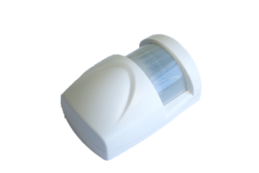
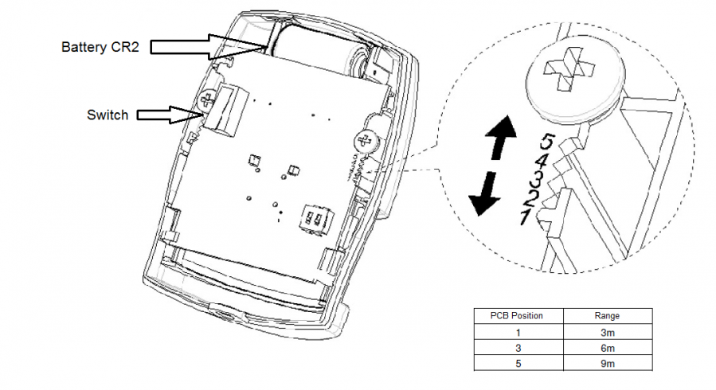
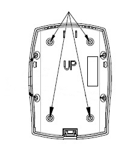
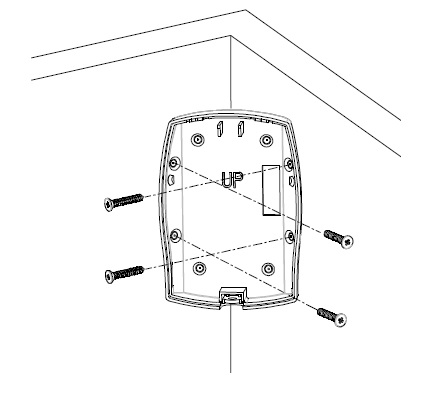

EVR_HSP02
Firmware Version : 1.3 |
 |
Quick StartSThis device is a Z-Wave Sensor. Tripple click the little button behind the battery cover to include or exclude the device. Clicking the little button behind the battery cover or a detected action by the sensor will wake up the device and keep it awake. Please refer to the chapters below for detailed information about all aspects of the products usage. |
Product description
This presence detector using PIR (passive infrared receiver) detects the presence of a person in a room. The unit sends information to a controller or any other associated Z-Wave device. Up to 5 devices can be controlled from this device. The sensor is a battery-powered device, which is in sleeping mode unless an action is detected. After a programmable sleeping time the device wakes up and sends a status information. After this the unit goes back to sleeping mode. The battery can be changed without unscrewing the device from the door or frame. The unit will give a visual warning on the device and sends a warning to the Z-Wave controller, when the battery needs to be replaced. The unit offers a tampering control and sends an alarm message when tampered.
Installation Guidelines
1. Release the Sensor from the battery cover by removing the fixing screw.

2. Put the included CR2 battery in the battery compartment.
3. The recommended position for a PIR Detector is in the corner of a room mounted at a height between 1.8 and 2.0 m. At this height, the detector will have a maximum range of up to 9 m with a field of view of 110°. The monitoring range can be set up with PCB pattern.

4. The sensor can be mounted as follows:
(a) For mounting on a plane wall use the battery cover, which is also the mount plate, and the screws. Further fix the sensor with mount plate like shown in the picture.

(b) For mounting the sensor in a corner use the lateral holes of the mount plate. Further fix the sensor with mount plate like shown in the picture.

Behavior within the Z-Wave network
I On factory default the device does not belong to any Z-Wave network. The device needs to join an existing wireless network to communicate with the devices of this network. This process is called Inclusion. Devices can also leave a network. This process is called Exclusion. Both processes are initiated by the primary controller of the Z-Wave network. This controller will be turned into exclusion respective inclusion mode. Please refer to your primary controllers manual on how to turn your controller into inclusion or exclusion mode. Only if the primary controller is in inclusion or exclusion mode, this device can join or leave the network. Leaving the network - i.e. being excluded - sets the device back to factory default.
If the device already belongs to a network, follow the exclusion process before including it in your network. Otherwise inclusion of this device will fail. If the controller being included was a primary controller, it has to be reset first.
Make sure that your Z-Wave Controller is in the Inclusion-/Exclusion-Mode. Click the little button behind the battery cover fast three times to confirm the process.
Operating the device
The Motion Detector is designed with two detecting sensors, Passive Infra-Red (PIR) sensor and light sensor, in order to fulfill the purpose of security and home automation. When the detector is cooperated with security appliances, it is acting as a security device by detecting changes in infra-red radiation levels. If a person moves within or across the device field of vision, a trigger radio signal will be transmitted to cause full alarm condition in order to frighten intruders away. Alternatively, when the detector is worked with home automation appliances, the detector can be set to perform the role of home automation device by detecting both changes in infra-red radiation levels and percentage of lux levels. Once night falls, the percentage of ambient illumination is lower than preset value. If a person moves within or across the device field of vision, a trigger radio signal will be transmitted e.g. to turn on the connected lightings for better illumination.
When the detector is first time powered up it is not included in a Z-Wave network and has no Associations. For Inclusion or setting an Association, the device has to be brought in the relevant mode and the inclusion/exclusion switch has to be clicked fast three times. The sensor supports two association groups, the first for one device (alarm) and the second for up to five devices (home automation).
Wakeup Intervals - how to communicate with the device?
W This device is battery operated and turned into deep sleep state most of the time to save battery life time. Communication with the device is limited. In order to communicate with the device, a static controller C is needed in the network. This controller will maintain a mailbox for the battery operated devices and store commands that can not be received during deep sleep state. Without such a controller, communication may become impossible and/or the battery life time is significantly decreased.
This device will wakeup regularly and announce the wakeup state by sending out a so called Wakeup Notification. The controller can then empty the mailbox. Therefore, the device needs to be configured with the desired wakeup interval and the node ID of the controller. If the device was included by a static controller this controller will usually perform all necessary configurations. The wakeup interval is a tradeoff between maximal battery life time and the desired responses of the device.
Tripple click on the little button behind the battery cover or a detected action by the sensor will wake up the device and keep it awake.
It is possible to set the node ID to 255 to send wakeup notifications as broadcast. In this mode device takes more time to go to sleep and drains battery faster, but can notify all it's direct neighbors about a wakeup.
Node Information Frame
NI The Node Information Frame is the business card of a Z-Wave device. It contains information about the device type and the technical capabilities. The inclusion and exclusion of the device is confirmed by sending out a Node Information Frame. Beside this it may be needed for certain network operations to send out a Node Information Frame.
Tripple click on the little button behind the battery cover or a detected action by the sensor sends a Node Information Frame.
Associations
A Z-Wave devices control other Z-Wave devices. The relationship between one device controlling another device is called association. In order to control a different device, the controlling device needs to maintain a list of devices that will receive controlling commands. These lists are called association groups and they are always related to certain events (e.g. button pressed, sensor triggers, ...). In case the event happens all devices stored in the respective association group will receive a common wireless command.
Association Groups:
| 1 | Devices controlled by open/close events (max. nodes in group: 5) |
Technical Data
| Battery Type | 1 * CR2 |
| Explorer Frame Support | No |
| SDK | 5.02 pl2 |
| Device Type | Slave with routing capabilities |
| Generic Device Class | Binary Sensor |
| Specific Device Class | Routing Binary Sensor |
| Routing | No |
| FLiRS | No |
| Firmware Version | 1.3 |